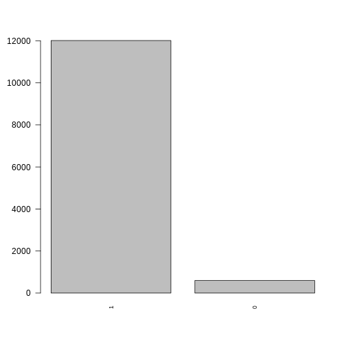
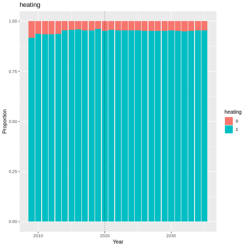
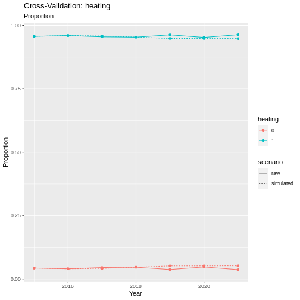
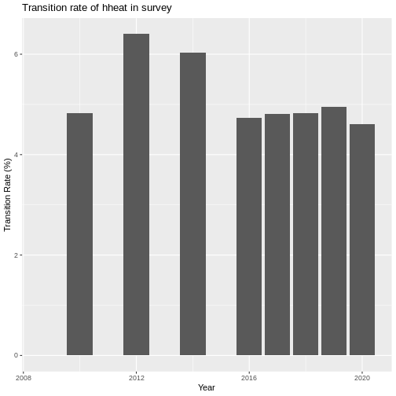
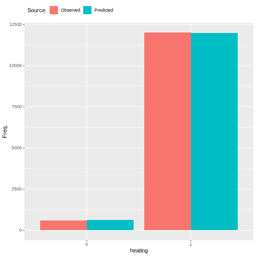
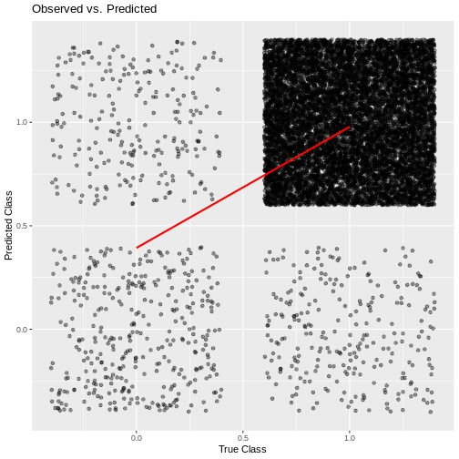

Heating
The Heating module is not present in all experiments. It has been included in the SF-12 and housing experiments, but is not technically required for SF-12 simulation runs.
Heating is a binary variable that represents an individuals ability to
adequately heat their home. The variable is taken directly from the
survey, from the
`hheat <https://www.understandingsociety.ac.uk/documentation/mainstage/variables/hheat/>`__
variable.
NOTE: Heating is not present in every wave of the survey. This was problematic in the generation of the housing_quality composite variable. For this reason, we decided to forward fill this variable to fill in some values for the missing waves. Justification for this decision is in the section Justification for Forward Fill.

Fig. 38 plot of chunk heating_barchart
Transition Model
To estimate transitions in heating, we fit a logit model using the
glm() function from the stats package in R. We used the binomial
family with a logit link function.
Formula:
Predictor |
Description |
Literature/Justification |
|---|---|---|
summary(model)
##
## Call:
## glm(formula = formula, family = binomial(link = "logit"), data = data,
## weights = weight)
##
## Deviance Residuals:
## Min 1Q Median 3Q Max
## -1.33703 0.01769 0.02867 0.04594 0.85367
##
## Coefficients:
## Estimate Std. Error z value
## (Intercept) 2.950340 3.704914 0.796
## factor(heating)1 3.319767 1.458905 2.276
## scale(age) -0.068202 0.319234 -0.214
## factor(sex)Male 0.096644 0.582296 0.166
## relevel(factor(ethnicity), ref = "WBI")BAN -0.244995 2.466160 -0.099
## relevel(factor(ethnicity), ref = "WBI")BLA 0.297122 1.786083 0.166
## relevel(factor(ethnicity), ref = "WBI")BLC -0.228502 2.063753 -0.111
## relevel(factor(ethnicity), ref = "WBI")CHI -0.160526 3.444261 -0.047
## relevel(factor(ethnicity), ref = "WBI")IND -0.035215 1.568074 -0.022
## relevel(factor(ethnicity), ref = "WBI")MIX 0.277764 1.877503 0.148
## relevel(factor(ethnicity), ref = "WBI")OAS 1.348962 3.029686 0.445
## relevel(factor(ethnicity), ref = "WBI")OBL -0.848160 5.935335 -0.143
## relevel(factor(ethnicity), ref = "WBI")OTH 2.894664 4.779247 0.606
## relevel(factor(ethnicity), ref = "WBI")PAK -0.556564 1.513136 -0.368
## relevel(factor(ethnicity), ref = "WBI")WHO -0.179361 1.179221 -0.152
## factor(region)East of England 1.317506 1.690274 0.779
## factor(region)London -0.814064 1.176274 -0.692
## factor(region)North East 1.244462 2.184858 0.570
## factor(region)North West -0.169440 1.237976 -0.137
## factor(region)Northern Ireland -0.475106 2.250174 -0.211
## factor(region)Scotland 0.156604 1.576786 0.099
## factor(region)South East -0.185219 1.183122 -0.157
## factor(region)South West 0.244589 1.406359 0.174
## factor(region)Wales 0.751346 1.878305 0.400
## factor(region)West Midlands 0.761370 1.439835 0.529
## factor(region)Yorkshire and The Humber 0.080737 1.326698 0.061
## relevel(factor(education_state), ref = "1")0 -1.335485 3.217566 -0.415
## relevel(factor(education_state), ref = "1")2 -1.521265 3.199262 -0.476
## relevel(factor(education_state), ref = "1")3 -0.892079 3.279710 -0.272
## relevel(factor(education_state), ref = "1")5 -1.660019 3.251868 -0.510
## relevel(factor(education_state), ref = "1")6 -1.455852 3.206597 -0.454
## relevel(factor(education_state), ref = "1")7 -0.714272 3.323053 -0.215
## factor(housing_quality)Low -0.358152 1.505364 -0.238
## factor(housing_quality)Medium -0.543219 0.798922 -0.680
## factor(loneliness)2 0.001498 0.674986 0.002
## factor(loneliness)3 0.061320 1.041214 0.059
## scale(nutrition_quality) 0.021469 0.299282 0.072
## scale(ncigs) -0.016210 0.236582 -0.069
## scale(hh_income) 0.354331 0.450281 0.787
## scale(SF_12) 0.194311 0.306314 0.634
## factor(financial_situation)2 -0.410978 0.997972 -0.412
## factor(financial_situation)3 -1.077603 1.028242 -1.048
## factor(financial_situation)4 -1.816079 1.188545 -1.528
## factor(financial_situation)5 -1.530868 1.592330 -0.961
## factor(behind_on_bills)2 -0.837083 0.797210 -1.050
## factor(behind_on_bills)3 -0.263824 2.678453 -0.098
## Pr(>|z|)
## (Intercept) 0.4258
## factor(heating)1 0.0229 *
## scale(age) 0.8308
## factor(sex)Male 0.8682
## relevel(factor(ethnicity), ref = "WBI")BAN 0.9209
## relevel(factor(ethnicity), ref = "WBI")BLA 0.8679
## relevel(factor(ethnicity), ref = "WBI")BLC 0.9118
## relevel(factor(ethnicity), ref = "WBI")CHI 0.9628
## relevel(factor(ethnicity), ref = "WBI")IND 0.9821
## relevel(factor(ethnicity), ref = "WBI")MIX 0.8824
## relevel(factor(ethnicity), ref = "WBI")OAS 0.6561
## relevel(factor(ethnicity), ref = "WBI")OBL 0.8864
## relevel(factor(ethnicity), ref = "WBI")OTH 0.5447
## relevel(factor(ethnicity), ref = "WBI")PAK 0.7130
## relevel(factor(ethnicity), ref = "WBI")WHO 0.8791
## factor(region)East of England 0.4357
## factor(region)London 0.4889
## factor(region)North East 0.5690
## factor(region)North West 0.8911
## factor(region)Northern Ireland 0.8328
## factor(region)Scotland 0.9209
## factor(region)South East 0.8756
## factor(region)South West 0.8619
## factor(region)Wales 0.6891
## factor(region)West Midlands 0.5970
## factor(region)Yorkshire and The Humber 0.9515
## relevel(factor(education_state), ref = "1")0 0.6781
## relevel(factor(education_state), ref = "1")2 0.6344
## relevel(factor(education_state), ref = "1")3 0.7856
## relevel(factor(education_state), ref = "1")5 0.6097
## relevel(factor(education_state), ref = "1")6 0.6498
## relevel(factor(education_state), ref = "1")7 0.8298
## factor(housing_quality)Low 0.8119
## factor(housing_quality)Medium 0.4965
## factor(loneliness)2 0.9982
## factor(loneliness)3 0.9530
## scale(nutrition_quality) 0.9428
## scale(ncigs) 0.9454
## scale(hh_income) 0.4313
## scale(SF_12) 0.5259
## factor(financial_situation)2 0.6805
## factor(financial_situation)3 0.2946
## factor(financial_situation)4 0.1265
## factor(financial_situation)5 0.3364
## factor(behind_on_bills)2 0.2937
## factor(behind_on_bills)3 0.9215
## ---
## Signif. codes: 0 '***' 0.001 '**' 0.01 '*' 0.05 '.' 0.1 ' ' 1
##
## (Dispersion parameter for binomial family taken to be 1)
##
## Null deviance: 166.66 on 9324 degrees of freedom
## Residual deviance: 106.76 on 9279 degrees of freedom
## (1 observation deleted due to missingness)
## AIC: 94.42
##
## Number of Fisher Scoring iterations: 8
Validation
handover_ordinal(raw.dat, base.dat, v)

Fig. 39 plot of chunk heating_validation
pivoted <- combine_and_pivot_long(df1 = cv,
df1.name = 'simulated',
df2 = raw,
df2.name = 'raw',
var = 'heating')
cv_ordinal_plots(pivoted.df = pivoted,
var = 'heating',
save = FALSE)
## `summarise()` has grouped output by 'time', 'scenario'. You can override using
## the `.groups` argument.

Fig. 40 plot of chunk heating_cv
Justification for Forward Fill
Adequate heating in the household is a key component of the
housing_quality proxy variable. It is one of the core variables of
housing_quality, and the one that is most closely associated with
conditions of poor housing quality such as excessive damp and mould.
However, unfortunately the hheat variable in Understanding Society
(the source of the heating variable) is not present in every wave. This
is problematic for the generation of the housing_quality proxy variable,
so here I will provide some justification that this is not a terrible
idea. The table below shows which waves hheat is present in
Understanding Society.
First we will look at how static the heating variable is over time. We
are looking at the proportion of the sample at each wave that shows a
change in hheat.
year_list <- c(2009, 2010, 2012, 2014, 2016, 2017, 2018, 2019, 2020, 2022)
transition_summary <- get_transition_rate(v, year_list)
ggplot(transition_summary, aes(x = time, y = transition_rate)) +
geom_col() +
labs(title = "Transition rate of hheat in survey") +
xlab('Year') +
ylab('Transition Rate (%)')

Fig. 41 plot of chunk ffill_justification
Results
Random Forest Ordinal models from the ranger package cannot provide a summary like some other models can, so instead we will look at plots of observed vs predicted values as well as the importance of each variable in the resulting model.

Fig. 42 plot of chunk heating_output
cumulative_link_plot(obs, preds)
## `geom_smooth()` using formula = 'y ~ x'

Fig. 43 plot of chunk heating_performance